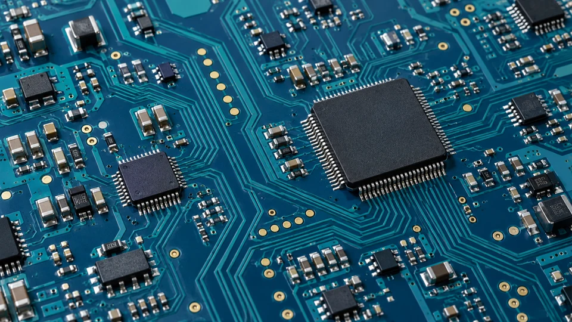
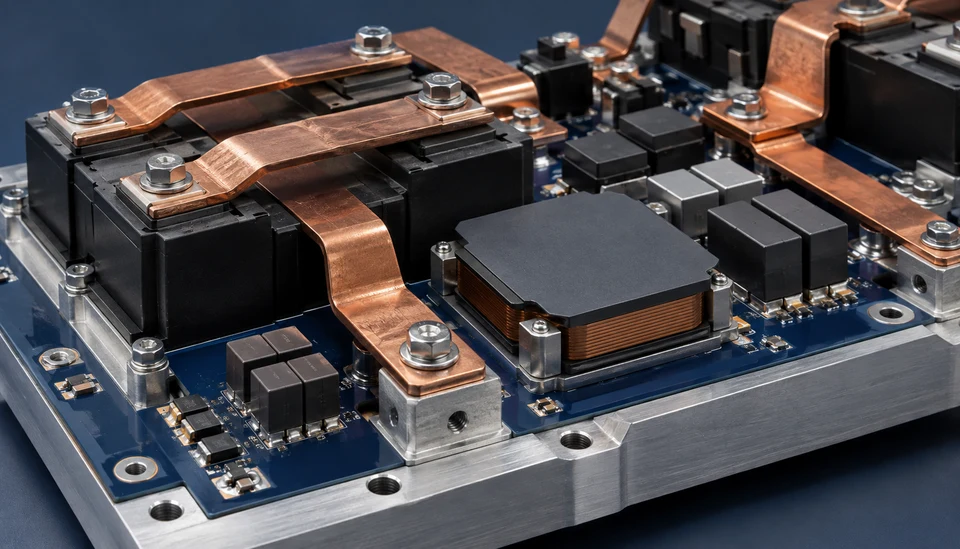

OUR CAPABILITIES
Engineering depth.
From concept to hardware.
Six connected disciplines, with requirements and verification considered throughout the development process.
Scope, deliverables and responsibilities are agreed for each project. The examples below are a starting point for a technical discussion.

Engineering images are illustrative. They do not depict company products or facilities.
01 / OUR CAPABILITIES
Avionics hardware design
Hardware starts with a clear set of requirements. Architecture, circuit design and board development need to work together with verification from the outset.
Engineering focus
- Requirements and hardware architecture
- Circuit and PCB design
- Design reviews and integration planning
Outputs to agree
- Hardware requirements and interface definitions
- Design documentation and agreed verification evidence
Functional overview
02 / OUR CAPABILITIES
Embedded electronics
Embedded electronics connect processing with the physical application. The engineering scope is defined around timing, interfaces, system behaviour and integration.
Engineering focus
- Processing and interface architecture
- Real-time system integration
- Hardware and firmware interfaces
Outputs to agree
- Interface and timing definitions
- Integration scope and test objectives

Engineering images are illustrative. They do not depict company products or facilities.
03 / OUR CAPABILITIES
Power electronics
Power architecture affects the behaviour of the complete system. Conversion, distribution, protection and thermal constraints are considered together.
Engineering focus
- Power architecture and conversion
- Distribution and protection concepts
- Electrical and thermal interfaces
Outputs to agree
- Power requirements and interface definitions
- Design and verification scope
Functional overview
04 / OUR CAPABILITIES
FPGA & digital design
Digital hardware must bring functional requirements and timing constraints together. FPGA logic, interfaces and verification are considered within the wider system architecture.
Engineering focus
- Digital architecture and FPGA logic
- Interface and timing definition
- Simulation and verification planning
Outputs to agree
- Digital requirements and design definitions
- Agreed simulation and verification outputs
V-model — schematic overview
05 / OUR CAPABILITIES
Verification & qualification
Verification starts with a clear question: what evidence demonstrates that a requirement has been met? Test planning and qualification activities are defined for the specific product and programme.
Engineering focus
- Requirement-based verification planning
- Environmental qualification scope
- Test procedures and evidence review
Outputs to agree
- Verification matrix and test scope
- Agreed test records and findings
Illustrative concept of planned robotic electronics production.
06 / OUR CAPABILITIES
Production & test
Production readiness depends on clear documentation, defined acceptance criteria and repeatable tests. The manufacturing and test responsibilities are agreed for each project.
Engineering focus
- Prototype and production preparation
- Test fixtures and acceptance criteria
- Configuration and test records
Outputs to agree
- Production and test documentation scope
- Agreed acceptance and handover records
START A TECHNICAL CONVERSATION
Tell us what
your mission needs.
Share your application, development stage and main technical challenge. We can use these to discuss a suitable engineering scope.
Munich, Germany
Email our teamYour email application opens when you select “Email our team”.